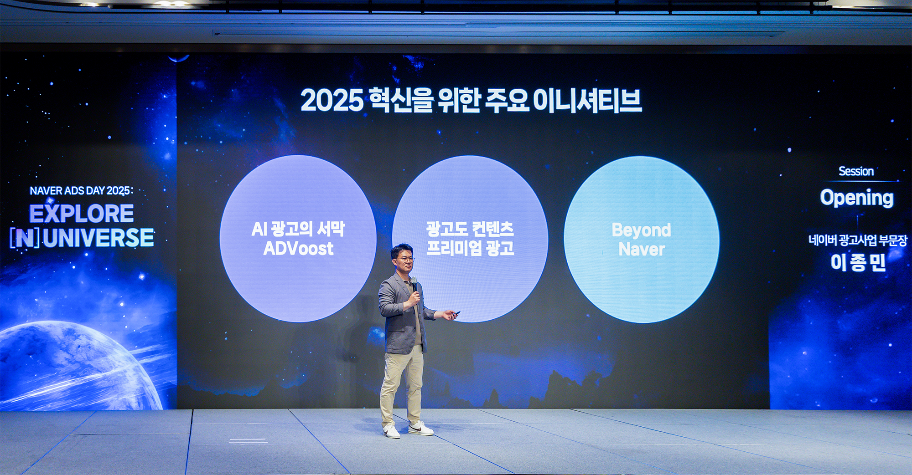
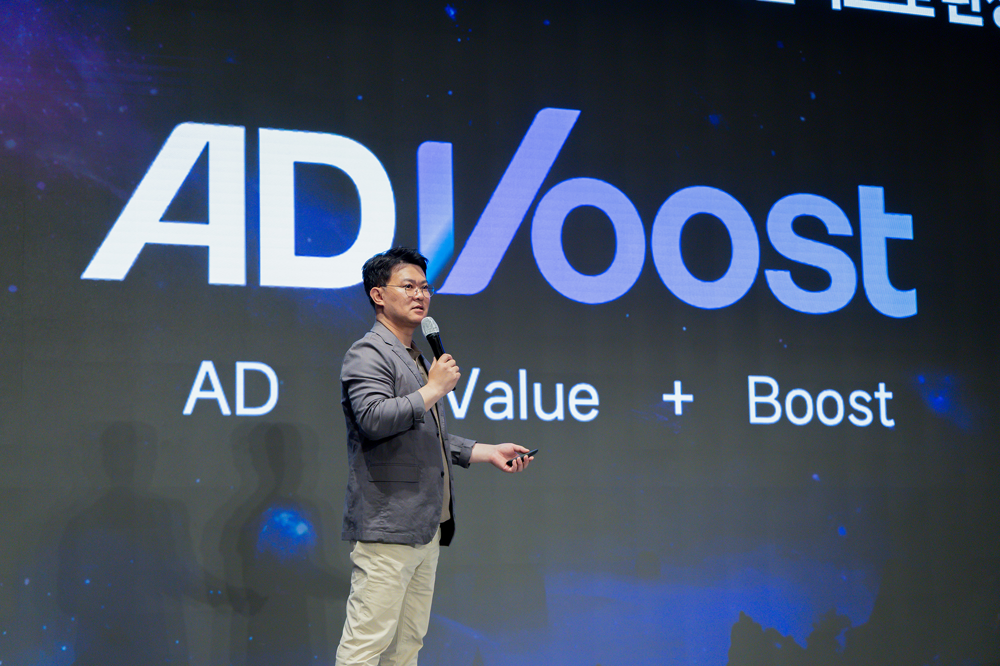

네이버 AI 브리핑 광고 도입 정리 — 애드부스트 파워링크만 노출되는 이유
네이버 AI 브리핑에 광고가 왜, 어떻게 붙는지 궁금해하시는 분들이 많더라고요. 결론부터 정리하면, 애드부스트(ADVoost) 파워링크만 노출돼요. 네이버 쇼핑 상품과 연동된 광고는 빠졌고요.
AI 브리핑은 검색어에 대한 답을 요약해서 보여주는 네이버의 생성형 AI 검색 기능이에요. 이 지면에 광고가 붙기 시작했다는 소식이라, 광고주와 콘텐츠 제작자 모두에게 실질적인 변화예요.

2025년 5월 네이버 광고 컨퍼런스에서 소개된 AI 광고 솔루션 라인업. 왼쪽이 애드부스트예요.
이미지 출처: NAVER Corp. 보도자료 · 네이버 본문엔 받아서 재업로드 권장
언제부터 광고가 붙었나요
네이버 AI 브리핑에는 2026년 7월 21일부터 광고가 노출되기 시작했다고 보도됐어요. 전자신문이 2026년 6월 18일 이 계획을 먼저 전했어요. 이후 news1 등 다른 매체도 같은 시행일로 확인했고요.
이번 노출은 정식 시행이라는 점에서 이전과 달라요. 지난 5월부터는 비공개 베타테스트(CBT) 형태로만 광고가 붙어 있었다고 해요.
어떤 광고만 뜨나요 — 파워링크만, 쇼핑은 제외
AI 브리핑에 뜨는 광고는 애드부스트 검색광고, 그중에서도 파워링크뿐이에요. 같은 애드부스트 계열이라도 네이버 쇼핑 상품과 연동되는 광고는 이번 대상에서 빠졌어요.
전자신문은 이 부분을 이렇게 전했어요. "네이버 쇼핑 상품을 연동하는 광고는 제외했다"고요. (전자신문, 2026.06.18)
그러니까 지금은 파워링크 광고주만 AI 브리핑 노출 대상이에요. 쇼핑 검색광고를 돌리는 광고주는 아직 해당하지 않아요.
노출 위치와 단가는 어떻게 정해지나요
노출 위치는 네이버 광고 에이전트가 자동으로 정해요. 광고주가 직접 자리를 고르는 구조가 아니에요.
보도에 따르면 네이버 광고 에이전트가 문맥과 탐색 흐름을 분석해요. 그렇게 가장 알맞은 노출 지점을 자동으로 골라요. 반면 단가, 즉 CPC(Cost Per Click, 클릭당 광고비)를 정확히 어떻게 산정하는지는 확인되지 않았어요. 광고주가 별도로 입찰할 수 있는지도 언론 보도만으로는 확인되지 않았어요. 이 부분은 네이버 광고주센터의 공식 공지로 별도 확인이 필요해요.
| 항목 | 내용(보도 기준) |
|---|---|
| 노출 개시 | 2026년 7월 21일 |
| 노출 대상 | 애드부스트 파워링크 |
| 제외 대상 | 애드부스트 쇼핑(쇼핑 상품 연동 광고) |
| 노출 지점 선정 | 네이버 광고 에이전트 자동 선정 |
| 단가(CPC) 산정 | 확인 필요(언론 미확인 · 공식 공지 참고) |
네이버는 왜 이 광고를 붙였을까요
네이버가 AI 브리핑을 새로운 수익원으로 키우려는 것으로 보여요. 관련 발언들을 보면 그 방향이 뚜렷해요.
네이버 관계자는 전자신문 인터뷰에서 이렇게 말했어요. "이용자는 자신이 필요로 하는 정보와 관련성이 높은 상품 또는 장소에 대한 추가 정보를 확인할 수 있고, 광고주는 잠재적 고객층과 접점 확대와 매출 증대를 기대할 수 있을 것"이라고요.
최수연 대표도 관련 발언에서 "AI 검색이 플랫폼 내 구매와 예약으로 이어지는 선순환 구조를 구축하고, 연말까지 유의미한 신규 수익원이 될 수 있게 하겠다"고 밝힌 것으로 전자신문이 전했어요.
그 이름에도 방향이 담겨 있어요. 애드부스트는 'AD(광고) + Value(가치) + Boost(증대)'를 합친 이름이에요.

애드부스트는 'AD(광고) + Value(가치) + Boost(증대)'를 합친 이름이에요.
이미지 출처: NAVER Corp. 보도자료 · 네이버 본문엔 받아서 재업로드 권장
이 배경에는 네이버가 2025년부터 순차적으로 공개해 온 AI 광고 솔루션 애드부스트가 있어요. 애드부스트 쇼핑도 이미 별도로 먼저 출시돼 있었고요. 다만 이때 발표는 "AI 기반 통합 비즈니스 플랫폼"이라는 큰 방향만 밝혔어요. 이번 AI 브리핑 광고의 시행일이나 범위까지 확정해 준 문서는 아니었어요.
규모를 보면 왜 이 지면에 공을 들이는지 짐작이 가요. 뉴스1 보도에 따르면 목표가 있어요. AI 브리핑이 뜨는 화면 비중, 즉 커버리지를 27%에서 연내 40%까지 넓히는 거예요. 검색 화면에서 AI 브리핑 자리가 커질수록 광고 지면도 함께 커지는 구조예요.
참고로 애드부스트 계열이 실제로 성과를 내고 있다는 이야기도 있어요. 서울경제 보도에 따르면, 애드부스트 쇼핑을 활용한 사업자가 활용하지 않은 곳 대비 신규 구매자·주문 건수가 약 60% 더 많았다는 조사 결과도 있어요(성균관대 연구팀과의 비교연구 기준). 다만 이 수치는 애드부스트 쇼핑 쪽 성과고, 이번에 살펴본 AI 브리핑 파워링크 노출과는 별개의 이야기라 헷갈리지 않으셔도 돼요.
블로거·마케터라면 뭘 알아두면 좋을까요
- 파워링크 광고주 — AI 브리핑 지면에 자동으로 노출될 수 있어요. 노출 자리는 신청이 아니라 시스템이 골라 줘요.
- 쇼핑 검색광고 광고주 — 이번 대상에서는 빠져 있어요. 다만 애드부스트 쇼핑은 이미 따로 출시돼 성장 중인 갈래라, 확장 여부는 계속 지켜볼 만해요.
- 콘텐츠·블로그 제작자 — 내 글이 AI 브리핑에 인용되는 것과, 그 화면에 광고가 뜨는 것은 서로 별개의 일이에요.
특히 세 번째가 헷갈리기 쉬워요. 인용은 콘텐츠 품질과 관련성으로 정해져요. 광고는 애드부스트 파워링크 쪽 이야기라 두 갈래가 겹치지 않아요. 내 글이 자주 인용된다고 광고비를 내야 하는 것도 아니고, 광고를 한다고 인용이 잘 되는 것도 아니에요.
여기까지 정리한 시행일·노출 범위·과금 방식은 전자신문·news1 같은 언론 보도를 기준으로 확인한 내용이에요. 이 글을 쓰는 시점 기준으로는 네이버 광고주센터의 공식 공지 원문까지는 직접 확인하지 못했어요. 정확한 시행 여부가 궁금하시면 네이버 광고주센터에서 한 번 더 확인해 보시는 걸 추천드려요.
자주 묻는 질문
Q. 이미 파워링크 광고를 하고 있으면 AI 브리핑 노출을 따로 신청해야 하나요?
아니에요. 신청은 필요 없어요. 보도 기준으로 네이버 시스템이 자동으로 노출 여부와 자리를 정하는 구조라, 광고주가 별도로 요청할 부분은 없어요.
Q. 애드부스트 쇼핑도 나중에 AI 브리핑에 붙을 수 있나요?
이번 발표에서는 확인되지 않았어요. 애드부스트 쇼핑은 별도 갈래로 계속 운영되고 있을 뿐, AI 브리핑 쪽에 합류할지는 아직 언론에 나온 바가 없어요.
참고한 곳
· NAVER Corp. 보도자료 (공식, 2025.05.28 — 애드부스트 일반 전략 발표, 이번 AI 브리핑 광고의 구체 시행 범위까지 확인해 주는 문서는 아니에요)
하루 정리
· 네이버 AI 브리핑에 2026.07.21부터 광고가 붙었다고 보도됐어요.
· 노출 대상은 애드부스트 파워링크뿐, 쇼핑 광고는 빠졌어요.
· 노출 위치는 네이버가 자동으로 정하고, 단가 산정 방식은 공식 공지로 별도 확인이 필요해요.
· 블로거라면 인용과 광고는 별개라는 것만 기억해 두면 돼요.